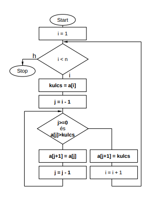

A beszúrásos rendezés a rendezési algoritmusok egy csoportja.[1] Legegyszerűbb formája az egyenes beszúrásos rendezési algoritmus egy tömb elemeinek sorba rendezésére. Az algoritmus k-adik lépése előtt az első k-1 elem már rendezett; a lépés során a k-adik elemet beszúrjuk az első k-1 elem közé az őt nagyság szerint megillető helyre, és a nála nagyobbakat eggyel eltoljuk.
Az eljárás hasonlít a kiválasztásos rendezéshez, ahol szintén a k-adik lépés végére az első k elem rendezett; de míg ott az első k helyen a végleges, rendezett sorozat eleje van, addig a beszúrásos rendezésnél a kezdeti, rendezetlen állapot első k eleme, de azok helyes sorrendben.
A tömböt az elejétől vizsgálva az egymás után következő elemeket hasonlítja össze. Ha olyat talál, hogy a második elem kisebb, mint az első, megcseréli a két elemet. Így a nagy elemek mint egy 'buborék' haladnak a tömb vége felé, a helyükre. Ha eléri a tömb végét, újra indul elölről. A rendezés akkor fejeződik be, ha az újraindulás után már nem történt egyetlen csere sem.
A beszúrásos rendezés lépésszáma legrosszabb és átlagos esetben is négyzetes, így nagy tömbök esetén nem hatékony. Nagyon kis tömbökre azonban ez a leggyorsabb algoritmus.
Az egyik legegyszerűbb rendezés. A tömb elejéről indulva vizsgálja az elemeket, és ha talál egy olyan elemet, ami kisebb bármelyik eddig vizsgáltnál, akkor annak megkeresi a helyét a már vizsgált tömbrészben, majd 'beszúrja' oda így minden egyes követő elemet "feljebb" kell csúsztatni
